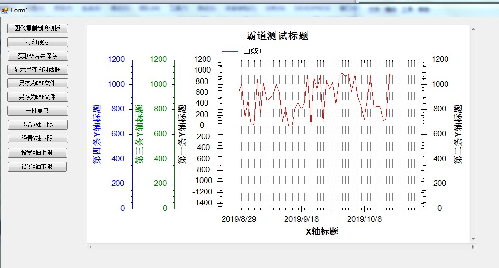

Winforn中设置ZedGraph曲线图的属性、坐标轴属性、刻度属性：
https://blog.csdn.net/BADAO_LIUMANG_QIZHI/article/details/100112573

ZedGraph是默认带2条Y轴的，所以其自带YAxis属性和Y2Axis属性，
第一条Y轴默认在左边显示,第二条开启后会在右边显示。
开启并设置第二条Y轴。
//第二条Y轴标题
myPane.Y2Axis.Title.Text = "第二条Y轴标题";
//第二条Y轴字体
//myPane.Y2Axis.Title.FontSpec = myFont;
//让第二条Y轴显示
myPane.Y2Axis.IsVisible = true;
2条以上的Y轴 就要新建后添加到其Y轴的list中去。
// 创建第三条Y轴
YAxis yAxis3 = new YAxis("第三条Y轴标题");
//添加到Y轴的list
myPane.YAxisList.Add(yAxis3);
//设置刻度线字体颜色
yAxis3.Scale.FontSpec.FontColor = Color.Green;
//设置标题字体颜色
yAxis3.Title.FontSpec.FontColor = Color.Green;
//设置Y轴颜色
yAxis3.Color = Color.Green;
// turn off the opposite tics so the Y2 tics don't show up on the Y axis
//关闭相反的tics，使y2 tics不会显示在y轴上
yAxis3.MajorTic.IsInside = false;
yAxis3.MinorTic.IsInside = false;
yAxis3.MajorTic.IsOpposite = false;
yAxis3.MinorTic.IsOpposite = false;
// Align the Y2 axis labels so they are flush to the axis
//对齐Y2轴标签，使其与轴平齐
yAxis3.Scale.Align = AlignP.Inside;
// 创建第四条Y轴
YAxis yAxis4 = new YAxis("第四条Y轴标题");
//添加到Y轴的list
myPane.YAxisList.Add(yAxis4);
yAxis4.Scale.FontSpec.FontColor = Color.Blue;
yAxis4.Title.FontSpec.FontColor = Color.Blue;
yAxis4.Color = Color.Blue;
// turn off the opposite tics so the Y2 tics don't show up on the Y axis
yAxis4.MajorTic.IsInside = false;
yAxis4.MinorTic.IsInside = false;
yAxis4.MajorTic.IsOpposite = false;
yAxis4.MinorTic.IsOpposite = false;
// Align the Y2 axis labels so they are flush to the axis
yAxis4.Scale.Align = AlignP.Inside;
这是创建第三条和第四条Y轴，更多条以此类推。
https://download.csdn.net/download/badao_liumang_qizhi/11635361